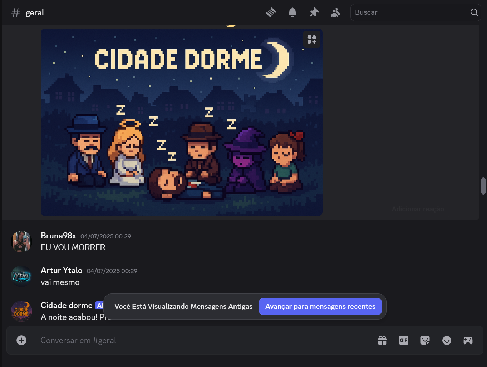
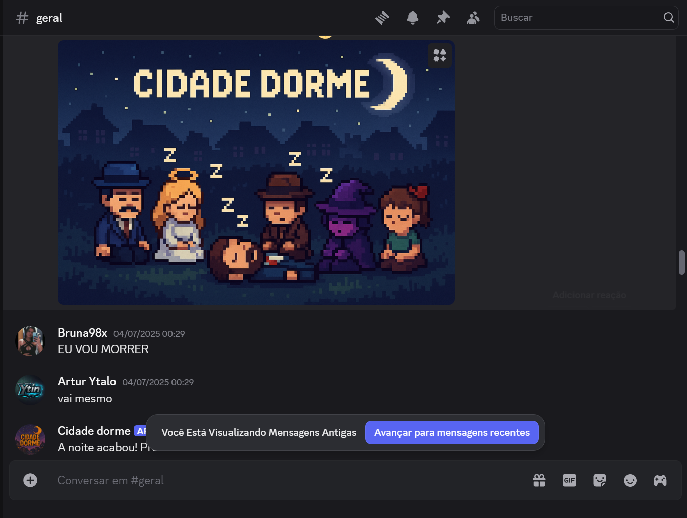

A caçada começou no seu Discord.
Na quietude da noite, pactos são selados e facas são afiadas. Quando o sol nascer, um traidor será revelado.
Este bot transforma seu servidor em um palco de intriga e paranoia. Com gerenciamento automático de voz, sons imersivos e papéis que mudam o jogo, a única coisa com que você precisa se preocupar é em quem confiar. Reúna seus amigos.
 
